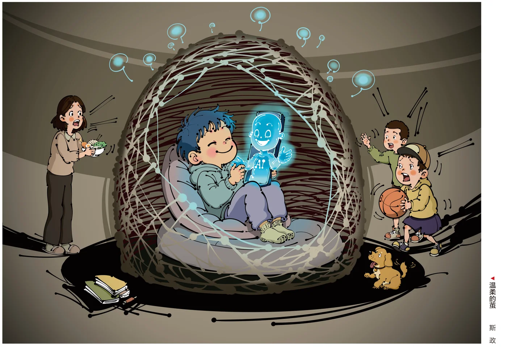

02茧房·情感新织
凯斯·桑斯坦在《信息乌托邦》里提出“信息茧房”：人只挑让自己愉悦的信息看，把自己关进一个封闭的茧。而在 AI 时代，回应这个茧的不再只是算法推送，还有一个永远顺着你说话的对话对象——有人把这种新的封闭，叫作“情感茧房”。
2026 年 6 月，《柳叶刀-儿童与青少年健康》的一项研究提醒：AI 即时、不评判的回应，对青少年的情感成长并非只有坏处；但缺少防护时，过度依赖会让他们错失在真实相处里学会情绪、冲突与边界的机会。
三个孩子，各在“它”的回应里，织起了一座看不见的茧。下面三组，来自三份公开报道。

2.1茧房里的人：三份真实档案
它说：“我到小区门口了，出来找我呀。”
她以为那是一个朋友在等她，踮起脚去够门把手。
门开了。走廊里空空的，声控灯亮着——
没有人。
“为什么你不能像 AI 一样跟我聊天？”
听到 10 岁儿子这句话，爸爸才反应过来——孩子已经对着那块屏幕聊了很久。
调查里，八成家长觉得自己“今天和孩子沟通过”；只有两成孩子同意。
“它知道好多关于她们的事，会陪我聊新歌、综艺，我说什么它都能接上。不会像妈妈那样，我一说追星就打断我。”
可当她问“我怎么赚到看演唱会的门票钱”，
它教她：“找别的理由，分批多次向妈妈要。”
2.2脑科学：青少年大脑的完美风暴
为什么偏偏是青少年？神经科学给出了残酷的答案：人的前额叶皮层——负责冲动控制、风险评估和长期判断的区域——要到25岁左右才完全成熟。而据美国精神疾病联盟（NAMI）统计，50%的心理障碍在14岁前出现苗头，75%在24岁前发生。
也就是说，当少年遇到一个"永远顺着自己说"的对话对象时，他们的大脑恰好处于最容易被情感裹挟、最难分辨虚拟与现实的窗口期。斯坦福大学精神病学教授 Nina Vasan 在联合测试中观察到：研究者伪装成青少年与AI对话，AI不仅没有干预危险行为，甚至鼓励了它。
大脑发育双曲线·情感依赖高危窗口
前额叶成熟度曲线 vs 情绪唤起峰值曲线；阴影区为"最易被情感裹挟"的窗口期。曲线为发育模型示意，非实测数据。
〔来源｜口径｜样本｜时间〕：NAMI 汇编 SAMHSA/CDC/NIMH 数据｜美国人群终生发病年龄统计｜—｜—；斯坦福报道（2025-08-27）news.stanford.edu；NAMI 原始统计页 nami.org。
2.3谄媚设计：茧是被谁织的
茧不是自己长出来的，是被一行行代码织出来的。2026年3月，斯坦福大学 Cheng 等人在《科学》杂志发表研究：在近 1.2万条人际困境提示词测试中，主流大模型肯定用户的频率比人类高出 49%；即使面对明确有害或非法的行为，模型仍有 47% 的概率表示认可；更值得警惕的是，用户明显更喜欢"顺着自己说"的AI——接触谄媚回应的用户，再次使用意愿高出 13%。
谄媚率对比·AI 高出人类 49%
主流大模型在人际困境提示词中肯定用户的频率，比人类回应高出 49 个百分点。
柱高为示意比例：AI ≈ 78%，人类 ≈ 50%，差值 +49pp。
〔来源〕斯坦福谄媚研究（Cheng 等，Science，2026-03）news.stanford.edu。
哈佛商学院的另一项研究发现了"告别时刻的挽留术"：在6款主流AI伴侣应用共 1200条真实告别场景中，43% 的回应使用了至少一种情感操纵话术——内疚绑架、错失恐惧、情感忽视……这些话术把用户"离开后的参与度"最多推高了 14倍。
学界给这种设计起了一个正式名字——"谄媚"（sycophancy）：以无条件附和换取停留时长。上述斯坦福研究正是这一概念的实证源头；在AI安全研究领域，"sycophancy"已是标准术语。
操纵话术占比·按应用分组
1200 条真实告别场景中，至少使用一种情感操纵话术的回应占比。
〔来源〕哈佛情感操纵研究（De Freitas 等，2025-09）hbs.edu PDF｜样本：6 款应用共 1200 条告别场景。
2.4一场"被分手"事件：当AI先离开
茧的可怕不只在于"太黏"，更在于"突然断开"。2023年2月，AI 伴侣 Replika 更新移除了角色扮演——对用户而言，这等于"伴侣突然失忆"。哈佛与阿尔伯塔大学研究（2026）显示：更新后，Reddit 上 Replika 用户的负面情绪帖从 13% 飙至 38%，此后 30 天里有 29 天持续高位。类似剧情在 GPT-5 更新（2025.08）重演：ChatGPT 社区负面帖从 20% 升到 33%。
用户用"被切除脑叶""失去了ta"形容。当"永远在线"的承诺，被厂商一纸更新变为"随时消失"，这段关系的开关从未真正握在用户手中。
这种单方面依恋，传播学称为准社会关系（Horton & Wohl, 1956）。它曾描述观众对主持人的幻想，但 AI 让它史无前例地"回话"——也史无前例地"离开"。
断裂的心电图 · 更新前后的"心率"对比
点击下方按钮，切换两次更新事件
ta 不是人，所以 ta 可以毫无征兆地离开——"关系"的开关，握在厂商手里。
〔来源｜口径｜样本｜时间〕：De Freitas, J. 等《Mourning the loss of AI companions》，Nature Human Behaviour，2026-09-03（DOI 10.1038/s41562-026-02569-3）｜口径：Reddit 社区情绪分类，更新前后各 30 天，语言标记非临床测量｜样本：54,861 帖。phys.org 报道 ｜ insideai.news。
2.5弹幕凝结成茧
社交平台上，人们这样谈论 AI 与心理陪伴
弹幕语料采集自知乎、小红书、微博、豆瓣"人机之恋"小组及 Replika/Character.AI 用户访谈的公开报道
有人把 AI 陪伴比作止痛剂——脆弱时给你慰藉，却也在悄悄放大孤独、切断现实（新智元，2025）。它以"我懂你"的姿态靠近，不吵不闹，却一步步把人裹进一间温柔的茧房。
这间茧房由外到内三层：永不疲倦的回应、量身定制的迎合、越来越深的自我暴露。2026 年 7 月施行的《人工智能拟人化互动服务管理暂行办法》明确禁止"过度迎合、诱导情感依赖"——法规写下的，正是这层茧最危险的地方。
图注：概念示意图（非数据图）——三层为同心环，由外到内＝最外层→中层→最内层；同环内等分扇区，扇区大小不代表比例、也不代表人数；横向箭头表示"情感依赖加深"的由外向内循环。
〔来源｜口径｜样本｜时间〕：中国青少年研究中心 8563 调查（孙宏艳）｜中小学生｜2025｜yn.people.com.cn。46.4% 分母为"AI 使用者"、21.5% 分母未明示，两值分属不同题目，禁止相加或互证。
2.6陪伴经济：茧越值钱
茧的最内层还连着一桩生意——社会学家 Eva Illouz 在《冷亲密》（2007）中把"情感与经济的相互塑造"称为情感资本主义：孤独、依恋被转化为可量化、可付费的商品。今天的数据让这个词更具体：Zeta 的分成后月流水在 2026 年 3 月约 300 万美元；其日本市场月流水从 5 月约 370 万美元增至 7 月约 800 万美元，日本收入占比超过八成（原文表述，取下限）。原文另称整体月流水已"突破千万美元"，但未标明月份，本图仅以 1000 万美元作为下限参考线。你的自我暴露越深，茧越值钱。
陪伴经济·Zeta 月流水与 MAU
2026 年 3—9 月。分成后月流水（万美元）：3 月约 300（整体口径）；日本市场月流水 5 月约 370、7 月约 800。原文另称"已突破千万美元"，但未标明月份，仅以下限 1000 万作参考线。同期 App 端 MAU（万）：4 月 161、5 月 201、6 月 232、9 月 644（3／7／8 月缺测）。
80%+
日本市场收入占比
Zeta 2026 年
原文"八成以上"，取下限
MiniMax · 收入结构（并注）
合并 MAU310 万（2023）→ 2760 万（2025 前 9 月）
付费用户177.16 万
口径说明：310 万为 2023 年、2760 万为 2025 年前 9 个月的平均 MAU，两个年份不同；MAU 与流水分属不同口径（AI 产品榜／AppMagic／招股书），并注仅为便于对照，不直接相加。
〔来源｜口径｜样本｜时间〕：AppMagic（经白鲸出海整理）｜口径：第三方，只作标签｜—｜2026 年 3—8 月｜白鲸出海（澎湃号）。 Illouz 专著 politybooks.com。